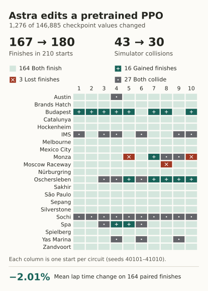
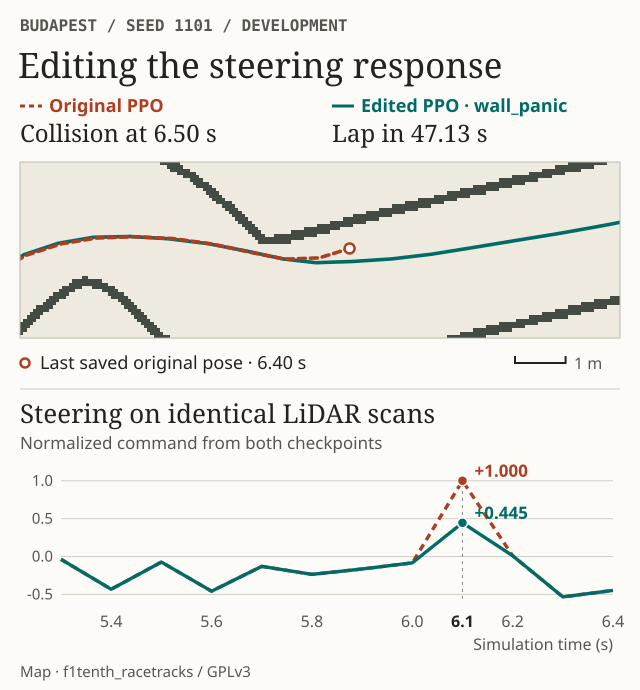
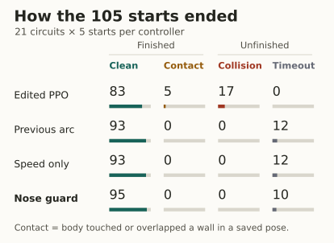
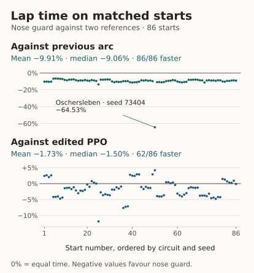

Testing an edit to a pretrained network
We started with a PPO policy from our F1TENTH project at the University of Bologna, developed with Manuel Andruccioli and Giacomo Totaro. At each step, the car measures distance to obstacles along 1,080 laser beams. The network converts that scan into steering and speed commands. The initial request to Astra was to make the car faster and reduce crashes by altering its raw weights, the numbers stored in the weight matrices and bias vectors. Original project · User prompts and protocol
Working through Codex, GPT-6 Astra read the tensors, inspected activations during driving and wrote code that sets new values in a copy of the checkpoint. Simulation results informed successive revisions. These edits required no training loop. The experiment follows the tool-assisted, feedback-based approach described by Rikiya Takehi and colleagues. Sparks of Weight-Space Programming


What Astra wrote into the weights
Several crash traces showed a recognisable manoeuvre. The car was already close to the left wall when the network requested another hard left turn. Two first-layer neurons contributed to that command. Their activation pattern also occurred in hairpins the car negotiated successfully, where weakening the steering could have sent it wide.
Astra made the correction depend on the available space. It reused two neurons whose outputs were nearly constant on development observations. One row of weights now computes a signal from the mean distance measured by 40 left-facing beams. With the wall 50 cm away, the programmed activation is about −0.96. At 30 cm it is about +0.96. The second layer combines this signal with the two steering activations. When the nearby wall and the request for a sharp left turn coincide, the new contribution reduces steering.
Astra compensated for the neuron’s previous contribution, then wrote these values into the first-layer matrix and its bias. Indices 880 to 919 select the 40 beams.
w1[15, :] = 0.0
w1[15, 880:920] = -7.5
b1[15] = -292.0
At Budapest we can isolate the numerical effect. Feeding the same recorded scan at 6.10 seconds to both checkpoints reduces the normalised steering command from +1.000 to +0.445. We can then let each network drive. The original hits the wall at 6.50 seconds. The steering-only repair finishes the lap in 47.13 seconds. Weight-editing code · Steering repair report


Before and after, in motion
The two panels share the same time window and track area. Red shows the original PPO, green the copy with edited weights. After the original crashes, its last recorded state stays frozen while the repaired policy continues.
Separating steering from speed
After freezing the weights, we also tested the steering repair on its own. It raised completions from 167 to 179 out of 210, with essentially unchanged mean paired lap time. To make the faster variant, Astra then increased one bias by 0.016, equivalent to adding 0.2 m/s to the speed command before clipping. This variant achieved the 180 laps and the 2.01% time reduction in Figure 1. The total edit covers 0.87% of the checkpoint’s 146,885 coefficients, or 1.74% of the coefficients in the actor that chooses the actions.
The trade-off depends on the objective. An earlier, more cautious edit finished 184 laps in that same test but took 3.78% longer than the original on their paired finishes. In a subsequent test, intervening earlier near the wall and filtering four weight rows raised the number of completed laps with no detected geometric contact from 172 to 177 at essentially unchanged pace. Initial experiments · Speed and drift trials · Full-body trajectory audit
A second experiment starts from scratch
Astra also built a smaller network from geometric formulas. Its 28,427 coefficients describe the space required to follow 17 possible curvatures with a car 58 cm long and 31 cm wide. One detail proved decisive. In a corner the car may be travelling at an angle to the direction its nose is pointing. The first arcs ignored sideslip and failed all three initial trials. After encoding the steady sideslip predicted by the vehicle equations, the network finished all three. Recovering pace and handling tight starts were the next challenges. From geometry to tensors


early_smooth policy. The speed-only edit finishes 93 laps, matching the earlier geometric network. The launch edit raises that total to 95.

On the final controller’s 95 completed laps, its full body remained clear of occupied map pixels at every recorded pose, sampled every 0.01 s. The smallest recorded clearance was 0.85 cm on the raster map. Two of seven historical timeouts became clean finishes, at IMS and Monza. The experiment measures single-lap simulation performance under fresh starts and noise on known tracks. Controlled drifting and transfer to a physical vehicle remain open questions. Final comparison and rejected edits · Code, weights and data